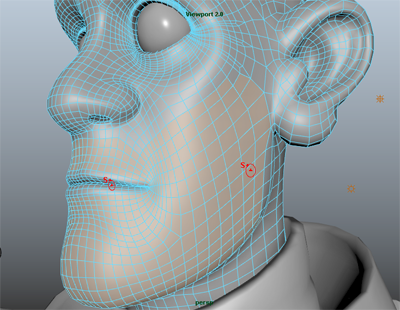
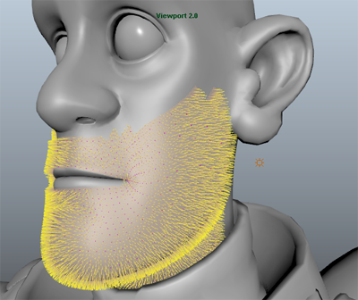

- 选择角色网格或要使用可修饰样条线填充的网格的多边形面。
在该示例中，将会选中角色嘴部周围的多边形面及下部面。
 - 在 XGen 编辑器中，将“此描述将生成什么类型的基本体？”(What kind of Primitives are made by this Description?)设置为“可修饰样条线”(Groomable splines)。
“创建 XGen 描述”(Create XGen Description)窗口中的其他所有选项将为可修饰样条线自动设置。
- 单击“创建”(Create)。
XGen 会创建一个新的“描述”(Description)，并将可修饰样条线添加到选定面。在使用可修饰样条线笔刷工具时，无需显示默认样条线的预览。关闭预览可以更好地查看可修饰样条线并提高视口交互性。
- 若要关闭默认的样条线预览，请执行以下操作：
- 在“XGen”工具栏上，单击“预览”(Preview)
 图标旁边的图标
图标旁边的图标  ，并在显示的菜单中禁用“自动更新预览”(Update Preview Automatically)。
，并在显示的菜单中禁用“自动更新预览”(Update Preview Automatically)。 - 如果场景中出现默认的样条线，则单击
 以清除默认的样条线预览。
以清除默认的样条线预览。
- 在“XGen”工具栏上，单击“预览”(Preview)
- 单击“修饰”(Grooming)选项卡，然后在“设置”(Settings)部分中，设置以下内容：
- “密度”(Density)：40。
此选项设置在给定区域上由 XGen 创建的基本体数。使用此值，然后根据需要提高或降低。
- “采样”(Sampling)：“最近”(Nearest)或“插值”(Interp)。
对于“密度”(Density)值较高的修饰，“互操作性”(Interop)可以产生最佳结果，但可能会降低视口交互性。
重要： 如果将“采样”(Sampling)设置为“线性”(Linear)，则当更改“密度”(Density)值时所有笔刷操作都将被移除。如果出现此情况，您可以通过导入保存在设置“导出”(Export)位置的 Ptex 文件检索数据。请参见 XGen 编辑器的“文件”(File)菜单。 - “TPU”设置为 30.0。
此选项将设置修饰笔刷创建的 Ptex 贴图的 texel 单位分辨率。当您使用这些笔刷时，XGen 将在您用笔刷绘制时为属性值创建 Ptex 贴图。高分辨率贴图可以产生更好的结果。请参见可修饰样条线贴图。
请注意，可修饰样条线现在覆盖选定网格上的每个面。在此示例中，您希望样条线仅显示在用笔刷绘制的区域内。可以使用“长度”(Length)笔刷执行此操作。
使用修饰笔刷设置样条线的长度和形状 - “密度”(Density)：40。